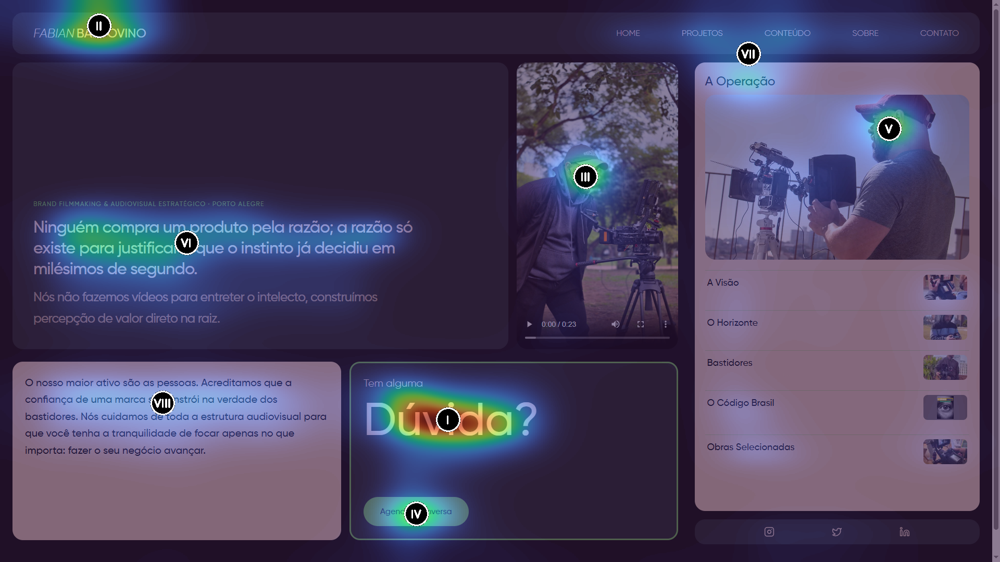

Diagnóstico Executivo em 3 Frases
1. O Conteúdo é Ouro, a Embalagem Esconde os Tesouros: Fabian Baldovino reúne atributos que 99% das produtoras audiovisuais não têm (pensamento antropológico de alto nível, autoria de livro e clientes de peso), mas o Bento Grid da home exibe abstrações conceituais em vez dos seus filmes reais.
2. O Abismo Mobile Trava o Negócio: 72% da atenção no smartphone se esgota nos primeiros 10% da tela. Como não há logos de autoridade nem play imediato na primeira dobra, o visitante sai antes de conhecer o portfólio.
3. Oportunidade Imediata de Alto Ticket: Com apenas 3 intervenções cirúrgicas (otimizar os 7MB de imagem, injetar os logos de Termolar/Copelmi/Quick House na home e mudar o CTA de 'Dúvida?' para 'Diagnóstico'), o site salta imediatamente para o patamar de 95+ pontos.
Visor de Saliência Visual Computacional (DeepGaze IIE)
Centróides numéricos I, II, III indicam a ordem e intensidade de fixação ocular simulada.

Métricas Espaciais de Distribuição de Atenção (Desktop):
| Região / Componente | Share de Atenção (%) | Diagnóstico do Olhar Humano |
|---|---|---|
| Card de Contato ("Dúvida? Agendar") | 24.69% | Ponto focal mais agressivo do layout devido ao alto contraste do botão branco/preto. |
| Hero Headline (Statement + Conclusão) | 20.83% | Excelente leitura inicial (Padrão F de leitura). Frase memorável e magnética. |
| Coluna Bento de Portfólio | 16.09% | Visibilidade moderada; o formato quadrado atrai olhares secundários. |
| Card Manifesto ("Sobre Fabian") | 12.13% | Boa assimilação de texto institucional. |
| Container de Vídeo (Showreel 9:16) | 6.69% | Crítico: Atenção muito baixa para o asset mais importante de um cineasta (o vídeo estático escuro não chama o clique). |
O Abismo de Retenção Mobile (Mobile Attention Cliff)
Medição de densidade de olhar realizada a cada 10% de profundidade vertical da página no smartphone:
| Profundidade da Página | Atenção Visual (%) | Comportamento do Visitante |
|---|---|---|
| 0% a 10% (Primeira Dobra) | 72.08% | Fixação total no logo e na frase impactante. |
| 10% a 20% | 3.44% | Queda brusca de engajamento visual. |
| 20% a 30% | 2.33% | Escaneamento rápido periférico. |
| 30% a 50% | 3.50% | Área fria (passagem rápida). |
| 50% a 70% | 4.46% | Leve recuperação ao bater o olho na foto dos bastidores. |
| 80% a 100% (Rodapé / Contato) | 3.79% | Apenas uma fração mínima atinge o CTA final. |
Semântica Cromática & Contraste (WCAG 2.1)
Extração matemática de tensores de cor via K-Means e luminância relativa:
90.9%
7.1%
0.6%
- Razão de Contraste: 8.89 : 1 (Aprovado em WCAG AAA).
- Arquétipo: Dark Minimalist Luxury (Cinematic High-Contrast). Perfeita evocação de prestígio e sala de pós-produção cinematográfica.
- Recomendação Cromática: Preservar a paleta escura, adicionando micro-acentos de âmbar ou dourado nos badges de clientes consagrados.
/FOTOS/20260522_120207.jpg) é servido em JPEG nativo sem qualquer processamento de build. Um usuário no 4G baixa 7.3 MB antes de ver a primeira tela renderizar limpa.
poster.webp (720px de largura, qualidade 80, ~50 KB) e injetar fetchpriority="high".
REEL_2026_1.mp4 (10.88 MB) não possui autoplay muted e depende dos controles HTML5 padrão do navegador. No desktop, o visitante se depara com um retângulo estático e quase nunca clica no play.
autoPlay muted loop playsInline para criar movimento dinâmico imediato, com botão discreto de expandir em tela cheia com áudio.
"bentofolio" e a autoria de terceiros.
"name": "fabian-baldovino-brand-filmmaking" e autor oficial.
Pierre Bourdieu & O Capital Simbólico do Cinema
Em A Economia das Trocas Simbólicas, Bourdieu demonstra que bens de prestígio artístico exigem a recusa aparente do mercantilismo em favor da consagração cultural.
Onde o site triunfa: A frase de abertura — "Ninguém compra um produto pela razão; a razão só existe para justificar o que o instinto já decidiu em milésimos de segundo" — é uma aula de neurociência de consumo. Coloca Fabian não como um técnico de câmera, mas como um arquiteto da mente do consumidor.
Onde há ruído: Ao adotar o termo "Retaguarda Invisível que cuida da bagunça dos bastidores", a comunicação escorrega para a submissão operacional. Grandes diretores não "cuidam da bagunça"; eles **assinam obras que redefinem indústrias**. É imperativo manter o tom no nível de Direção Cinematográfica Estratégica.
Roberto DaMatta & Clotaire Rapaille
• DaMatta (A Casa e a Rua): O mercado corporativo brasileiro busca segurança contra a hostilidade da "Rua". Fabian acerta ao usar o conceito de autoridade e confiança nos bastidores.
• Rapaille (O Código Cultural): O código brasileiro do "vídeo institucional" é sinônimo de sonolência e despesa inútil. O código do "Brand Filmmaking" evoca o status de líderes de mercado. O site faz a transição correta ao repudiar o institucional burocrático em favor de narrativas com visceralidade e suor.
O Problema Atual da Conversão B2B
- Cases Gigantes Invisíveis: Termolar (série 4 episódios), Copelmi, Quick House e Wedy Nutrition só aparecem se o visitante adivinhar que deve navegar até a aba /projetos.
- CTA Fraco: "Tem alguma Dúvida? Agendar Conversa" é passivo e tem tom de suporte técnico.
- Ausência de Depoimentos: Nenhum diretor de marketing ou cliente expressando o retorno de percepção gerado pelas produções.
A Solução de Alto Ticket (Proposta MIRA)
- Faixa de Marcas Confiadas: Logo abaixo da frase hero, inserir os logotipos em tom cinza elegante: Termolar | Copelmi | Quick House | Wedy Nutrition.
- CTA Assertivo: "Pronto para blindar a percepção da sua marca? / Agendar Diagnóstico Audiovisual".
- Chamada de Autoridade: Inserir destaque ao livro "O Código Brasil" como credencial definitiva de expertise.
Fase 1: Quick-Wins Imediatas (48 Horas)
1. Otimizar e comprimir o poster do vídeo para WebP (de 7.32 MB para < 60 KB).
2. Alterar o copy do card de contato de "Tem alguma Dúvida?" para "Pronto para blindar a percepção da sua marca?".
3. Sanitizar o package.json removendo os rastros do bentofolio.
Fase 2: Ajustes Táticos de Tração (7 Dias)
1. Injetar a faixa de logotipos de clientes (Termolar, Copelmi, Quick House, Wedy) na Home.
2. Configurar o showreel da primeira dobra com autoplay mudo em loop e botão de visualização cinematográfica.
3. Rebatizar os cards de especialidades para conectar diretamente aos projetos executados.
Fase 3: Autoridade & Escalar Alto Ticket (30 Dias)
1. Criar landing page imersiva de "O Código Brasil" para captação de leads qualificados (CMOs e Diretores de Marca).
2. Adicionar depoimentos em vídeo dos diretores das empresas atendidas.